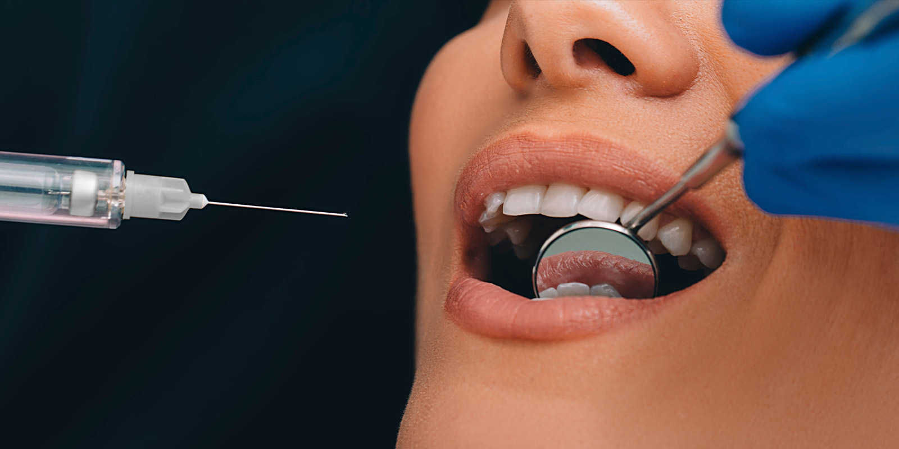
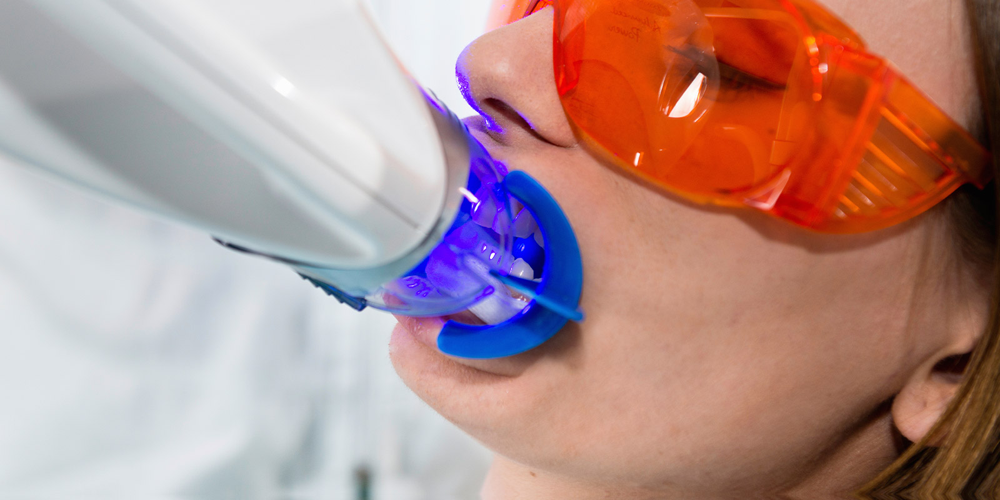

첨단 진료장비
연세리안치과는 3D CT 의 디지털 진단 장비 등 다양한 첨단 장비를 이용하여
정확하고 체계적인 분석을 바탕으로 안전하고 편안한 진료 시스템을 운영하고 있습니다.
덴티움 3D CT
턱뼈의 형태를 0.1mm 단위로 3차원 촬영하여 모든 각도에서 뼈의 양, 형태, 위치를 분석할 수 있는 장비입니다.
임플란트 식립시 각도 및 길이를 결정하는 사전 수술 계획이 가능하도록 하여 수술 위험 요인을 줄이고, 정확한 수술을 가능하게 하며,
저선량(기존방사능 노출 대비 50% 이하), 고해상도의 영상 분석 장비입니다.
자가혈 성장인자(PRF) 원심분리기
임플란트 수술시 뼈 및 잇몸 조직을 재생시키기 위해 환자 본인의 혈액에서 성장인자를 채취하여 조직을 분리하는 장비입니다.
자가혈 유래이므로 부작용이 없고 면역력 강화 및 조직 재생 효과를 증대시킬 수 있어 성공적인 수술에 기여합니다.
메가젠 N2 체어
LUVIS 라이트를 이용하여 진료의 질을 높이고,
환자가 편안하게 진료 받을 수 있는 시트 및 43인치의 넓은 모니터를 이용해 진료에 대한 원활한 설명을 지원합니다.

무통마취기
디지털 마취 시스템으로 주사액 주입시 저속의 균일한 속도로 무통 자극이 되도록 하여,
아프고 두려운 마취에 대한 공포를 해소시킬 수 있습니다.
전기소작기
연조직 절제시 출혈 및 조직 손상없이 빠르고 간편하게 시술할 수 있는 장비로서,
치은 절제술, 낭종 제거시 사용합니다.

전문가 미백 광조사기
병원 내원시 3번의 시술만으로 환하고 밝은 치아로 변모할 수 있는 치과 전용 전문 미백 장비입니다.